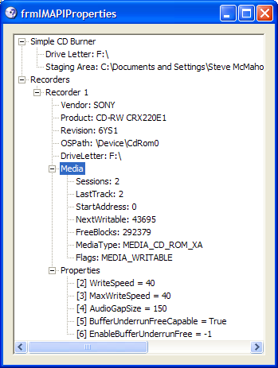
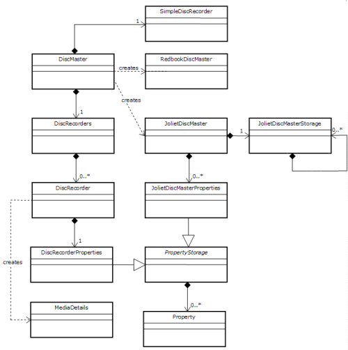

acclImapiWrapper Binary (21K)
acclImapiWrapper Binary (21K)
 IMAPI Wrapper Demonstration (84K)
IMAPI Wrapper Demonstration (84K)
 IMAPI Wrapper Documentation (85K)
IMAPI Wrapper Documentation (85K)
 IMAPI Wrapper (89K)
IMAPI Wrapper (89K)
 27 Jun 2004
27 Jun 2004
First Posted

Image Mastering API (IMAPI) Wrapper for .NET
IMAPI is provided with Windows XP and above to provide full control over the creation of audio and data discs. This sample provides a wrapper around the API allowing it to be used from .NET; both VB and C# client code is provided.
About IMAPI
The Image Mastering API allows an application to stage and burn a simple audio or data image to CD-R and CD-RW devices. All XP and above systems come with the Adaptec implementation of IMAPI, which is controlled through the MSDiscMasterObj COM object. In theory other implementations of the API could be made available by vendors but I have not seen any details of any other implementations. The API interfaces are briefly described in the diagram and table below:
MS Disc Master Object
| Interface | System | Description |
| ICDBurn | Shell | Simple interface for writing files to CD. Burn method copies staging area to CD. |
| IDiscMaster | IMAPI | Controls an IMAPI session. Opens, closes, enumerates and selects recorders, and allows burning of data or audio discs. |
| IDiscRecorder | IMAPI | Provides access to a single recorder connected to the system. |
| IRedbookDiscMaster | IMAPI | Contains functions to create a Redbook (audio) disc on the active recorder. |
| IJolietDiscMaster | IMAPI | Contains functions to create a Joliet (data) disc on the active recorder. |
| IDiscMasterProgressEvents | IMAPI | Interface you can implement to receive feedback about progress during a burn and notification of Plug'n'Play events affecting the available recorders. |
Implementing an IMAPI Wrapper
The IMAPI COM interface isn't implemented in a particularly Interop-friendly way. The DLLs containing the implementations do not have type libraries nor do they expose ProgIds to construct the objects. There isn't even any IDL code to help along the creation of a type library in the Platform SDK; rather there is a MIDL-generated file which is intended for use in C++ (or at a push, C).
Based on the VB Classic implementation of this wrapper, I took the approach of using Interop to modify the MIDL declares into something which can be used directly from Managed code. Here's an example of how to do the translation for the IDiscMaster interface.
1. MIDL Definition of IDiscMaster
EXTERN_C const IID IID_IDiscMaster;
#if defined(__cplusplus) && !defined(CINTERFACE)
MIDL_INTERFACE("520CCA62-51A5-11D3-9144-00104BA11C5E")
IDiscMaster : public IUnknown
{
public:
virtual /* [helpstring] */ HRESULT STDMETHODCALLTYPE
Open( void) = 0;
virtual /* [helpstring] */ HRESULT STDMETHODCALLTYPE
EnumDiscMasterFormats(
/* [out] */ IEnumDiscMasterFormats **ppEnum) = 0;
virtual /* [helpstring] */ HRESULT STDMETHODCALLTYPE
GetActiveDiscMasterFormat(
/* [out] */ LPIID lpiid) = 0;
virtual /* [helpstring] */ HRESULT STDMETHODCALLTYPE
SetActiveDiscMasterFormat(
/* [in] */ REFIID riid,
/* [iid_is][out] */ void **ppUnk) = 0;
virtual /* [helpstring] */ HRESULT STDMETHODCALLTYPE
EnumDiscRecorders(
/* [out] */ IEnumDiscRecorders **ppEnum) = 0;
virtual /* [helpstring] */ HRESULT STDMETHODCALLTYPE
GetActiveDiscRecorder(
/* [out] */ IDiscRecorder **ppRecorder) = 0;
virtual /* [helpstring] */ HRESULT STDMETHODCALLTYPE
SetActiveDiscRecorder(
/* [in] */ IDiscRecorder *pRecorder) = 0;
virtual /* [helpstring] */ HRESULT STDMETHODCALLTYPE
ClearFormatContent( void) = 0;
virtual /* [helpstring] */ HRESULT STDMETHODCALLTYPE
ProgressAdvise(
/* [in] */ IDiscMasterProgressEvents *pEvents,
/* [retval][out] */ UINT_PTR *pvCookie) = 0;
virtual /* [helpstring] */ HRESULT STDMETHODCALLTYPE
ProgressUnadvise(
/* [in] */ UINT_PTR vCookie) = 0;
virtual /* [helpstring] */ HRESULT STDMETHODCALLTYPE
RecordDisc(
/* [in] */ boolean bSimulate,
/* [in] */ boolean bEjectAfterBurn) = 0;
virtual /* [helpstring] */ HRESULT STDMETHODCALLTYPE
Close( void) = 0;
};
2. Interop Definition of IDiscMaster
/// <summary>
/// IDiscMaster interface
/// </summary>
[ComImportAttribute()]
[GuidAttribute("520CCA62-51A5-11D3-9144-00104BA11C5E")]
[InterfaceTypeAttribute(ComInterfaceType.InterfaceIsIUnknown)]
internal interface IDiscMaster
{
/// <summary>
/// Opens an IMAPI object
/// </summary>
void Open();
/// <summary>
/// Retrieves a format enumerator
/// </summary>
void EnumDiscMasterFormats(
out IEnumDiscMasterFormats ppEnum);
/// <summary>
/// Retrieves the currently selected recorder format
/// </summary>
void GetActiveDiscMasterFormat(
out Guid lpiid);
/// <summary>
/// Sets a new active recorder format
/// </summary>
void SetActiveDiscMasterFormat(
[In()]
ref Guid riid,
[MarshalAs(UnmanagedType.Interface)]
out object ppUnk);
/// <summary>
/// Retrieves a recorder enumerator
/// </summary>
void EnumDiscRecorders(
out IEnumDiscRecorders ppEnum);
/// <summary>
/// Gets the active disc recorder
/// </summary>
void GetActiveDiscRecorder(
out IDiscRecorder ppRecorder);
/// <summary>
/// Sets the active disc recorder
/// </summary>
void SetActiveDiscRecorder(
IDiscRecorder pRecorder);
/// <summary>
/// Clears the contents of an unburnt image
/// </summary>
void ClearFormatContent();
/// <summary>
/// Registers for progress notifications
/// </summary>
void ProgressAdvise(
IDiscMasterProgressEvents pEvents,
out IntPtr pvCookie);
/// <summary>
/// Cancels progress notifications
/// </summary>
void ProgressUnadvise(
IntPtr vCookie);
/// <summary>
/// Burns the staged image to the active recorder
/// </summary>
void RecordDisc(
int bSimulate,
int bEjectAfterBurn);
/// <summary>
/// Closes the interface
/// </summary>
void Close();
}
About the IMAPI Wrapper
The wrapper is implemented in the library acclImapiWrapper.dll. This is signed with a strong key-name pair, so can be installed into the Global Assembly Cache (GAC). To use it, you can either register it into the GAC using gacutil /if or you can just copy it into the output directory of the application. Whichever of those options you choose, you will need to be able to add the DLL to your project's references.
The following sections provide an overview of the IMAPI Wrapper, as well as providing some related information you will want to know when using it. Further documentation of all of the classes and methods is available from the downloads.
1. Wrapper Interface
The UML diagram below shows the objects exposed by the IMAPI Wrapper:
IMAPI Wrapper UML Diagram
A brief high-level overview of the interfaces and their use is as follows:
- DiscMaster
This is the main class of the library and the only one which is directly instantiable using new. All other objects are obtained from this class. DiscMaster provides four main services:
- Ability to set the active disc mastering format to either Joliet (data) or Redbook (audio) and obtain a JolietDiscMaster or RedbookDiscMaster object which can be used to build up the stash image to burn to the disc.
- Get the list of recorders attached to the system using the DiscRecorders collection. This also allows the active disc recorder to be set for a burn.
- Initiate a CD Burn using the RecordDisc method, and provide progress information through a series of events whilst stashing and disc burn is underway.
- Access to the SimpleDiscRecorderobject.
- SimpleDiscRecorder
This class is Microsoft's high level wrapper around IMAPI which is used by Explorer. It offers a very simple service for creating data CDs: you copy files to the staging folder and then call the Burn method, which brings up the standard Windows wizard for burning the disc. For more details on using this interface, refer to the VB classic article Simple Data CD Creation Using ICDBurn.
- DiscRecorders
A standard managed-code collection of the recorders attached to the system.
- DiscRecorder
Represents a single recorder attached to the system. This class provides five main functions:
- Obtaining identification information for the recorder, including the recorder's DriveLetter, Vendor, Product, Revision and RecorderType (CDR or CDRW).
- Getting information about the media contained within the disc using the GetMediaDetails function. Note to obtain media details you first need to open the recorder for exclusive access using OpenExclusive. You should close it again immediately afterwards using Close.
- Erasing a CDRW disc using the EraseCDRW method.
- Ejecting the drive tray using Eject.
- Getting recorder properties, such as the drive speed, as a collection. This is obtained from the Properties accessor.
- RedbookDiscMaster
A class which allows an audio CD image to be staged. Audio CDs store audio in "blocks", which each represent 1/75s of audio (since audio CDs are encoded in 16 bit stereo at 44.1kHz, a block is 2352 bytes). Any audio track must be an exact multiple of this block size, and hence the class operates in terms of blocks.
The main functions of the class are to provide information about the used and total available space on the disc, to create audio tracks and to add blocks of data to the track. Tracks can either be created using the AddAudioTrackFromStream method, or, for more fine-grained control a track can be created using CreateAudioTrack followed by multiple calls to AddAudioTrackBlocks method followed by CloseAudioTrack.
Audio data is added as raw 16-bit stereo L-R pairs at 44.1kHz sampling frequency. If the data being added is not an even multiple of 2352 bytes, the class will append trailing 0 bytes to the data to make it an even block.
- JolietDiscMaster
A class allowing a data CD image to be staged. Data CDs are more sophisticated than audio CDs in that they can contain multiple sub-directories, and therefore a more complex staging mechanism is needed. Each directory is represented as a JolietDiscMasterStorage object, which allows either files or sub JolietDiscMasterStorage objects to be associated with it. Note that in this implementation, it is assumed that the data to be written to the data CD exists in the form of a file elsewhere on the file system. It is possible to create CDs directly from streams which don't have any underlying file with some modification to the code (perhaps a callback to the application to request the stream).
To build up the image, get the root storage directory from the RootStorage property. Files and subdirectory storage objects can then be aded to this.
Once the image has been built up, the AddData transfers the information described in the RootStorage to the data CD image.
- JolietDiscMasterStorage
This class represents a single directory on a data CD. Files are added to the directory using AddFile and subdirectories using CreateFolder, which returns a new instance of this class for the subdirectory. When adding a file, you specify the name of the source file on the file system as well as the name of the file when it is written to CD. Typically the name of the file on the CD will be the filename portion of the source file.
Note that only the file name/folder name information is actually added to the class when these methods are called; the information is not read until the owning JolietDiscMaster object's AddData method is called.
2. Interop and Non-Deterministic Finalization
Since IMAPI is implemented as using COM, there is something of an impedance mismatch when you come to use it from the .NET Framework. Being a COM library, IMAPI expects AddRef and Release to be called on all objects in pairs. If Release is not called on the DiscMaster object, then any attempt to use it again will fail with IMAPI error code IMAPI_E_STASHINUSE, which has the error description "another application is already using the IMAPI stash file required to stage a disc image. Try again later." Since the "other" application was your own one, and is now dead, there is no way of recovering and the error will persist until you restart the machine.
Whilst .NET provides the IDisposable pattern to help dealing with this problem, there is still a problem. If for any reason your application hits an unhandled exception, Dispose is not called, and instead only the finalizer for the class gets called. During class finalization, you may only call code on unmanaged objects. In my library, the DiscMaster object is held in a managed object, and so you cannot call any code on it during finalization. This means that any application using the library needs to take steps to ensure that Dispose is always called on the disposable classes in the library (any use of DiscMaster, RedbookDiscMaster or JolietDiscMaster).
There are two things you should do to prevent this sort of problem. The first is to use try...catch blocks for calls to the IMAPI library methods, and secondly you should install a ThreadException handler for your application. The thread exception handler is called whenever your application hits an unhandled exception and therefore allows you call Dispose on things which need it before the application dies:
using System.Threading;
public frmAudioCDCreator()
{
Application.ThreadException += new ThreadExceptionEventHandler(
application_ThreadException);
}
private void application_ThreadException(
object sender,
ThreadExceptionEventArgs e)
{
// (Normally you would not show the user the actual message)
MessageBox.Show(this, String.Format(
"An untrapped exception occurred: {0}. The application will now close.",
e.Exception), Text, MessageBoxButtons.OK, MessageBoxIcon.Error);
// Call the method which disposes resources:
Close();
}
3. Reusable Internal Code
The IMAPI wrapper library contains a few internal classes which should be reusable if you're writing other code to interoperate with COM, such as OLE Structure Storage applications.
- IStreamOnStream - an adapter which allows a .NET Stream object to expose its methods through a COM IStream interface.
- IStreamOnFileStream - a specialisation of IStreamOnStream which works for .NET FileStream objects.
- PropertyStorage - a class which wraps a COM IPropertyStorage implementation. Exposes properties as Property objects.
To use any of these objects, you will also need to extract the the relevant interface definitions from IMAPIInterop.
The Properties Sample
To demonstrate the library, the downloads include a simple sample for enumerating the disc recorders on the system and showing all of the properties for each recorder. The code for performing this, in VB.NET, is as follows:
tvwRecorders.Nodes.Clear()
' Get a new Disc Master instance
Dim dm As DiscMaster = New DiscMaster()
' Obtain information about the simple disc recorder:
Dim simpleRecorder As SimpleDiscRecorder = dm.SimpleDiscRecorder
Dim simpleNode As TreeNode = tvwRecorders.Nodes.Add("Simple CD Burner")
If (simpleRecorder.HasRecordableDrive()) Then
simpleNode.Nodes.Add( _
String.Format("Drive Letter: {0}", _
simpleRecorder.GetRecorderDriveLetter()))
simpleNode.Nodes.Add( _
String.Format("Staging Area: {0}",_
simpleRecorder.GetBurnStagingAreaFolder(Handle)))
Else
simpleNode.Nodes.Add("Not present")
End If
simpleNode.Expand()
' Add information about each recorder on the system:
Dim recordersNode As TreeNode = tvwRecorders.Nodes.Add("Recorders")
Dim recorderIndex As Integer = 0
Dim recorder As DiscRecorder
For Each recorder In dm.DiscRecorders
Dim recorderNode As TreeNode = recordersNode.Nodes.Add( _
String.Format("Recorder {0}", ++recorderIndex))
' Add identifying information about the recorder:
recorderNode.Nodes.Add( _
String.Format("Vendor: {0}", recorder.Vendor))
recorderNode.Nodes.Add( _
String.Format("Product: {0}", recorder.Product))
recorderNode.Nodes.Add( _
String.Format("Revision: {0}", recorder.Revision))
recorderNode.Nodes.Add( _
String.Format("OSPath: {0}", recorder.OsPath))
recorderNode.Nodes.Add( _
String.Format("DriveLetter: {0}", recorder.DriveLetter))
' Show media information:
Dim mediaNode As TreeNode = recorderNode.Nodes.Add("Media")
recorder.OpenExclusive()
Dim media As MediaDetails = recorder.GetMediaDetails()
If (media.MediaPresent) Then
mediaNode.Nodes.Add( _
String.Format("Sessions: {0}", media.Sessions))
mediaNode.Nodes.Add( _
String.Format("LastTrack: {0}", media.LastTrack))
mediaNode.Nodes.Add( _
String.Format("StartAddress: {0}", media.StartAddress))
mediaNode.Nodes.Add( _
String.Format("NextWritable: {0}", media.NextWritable))
mediaNode.Nodes.Add( _
String.Format("FreeBlocks: {0}", media.FreeBlocks))
mediaNode.Nodes.Add( _
String.Format("MediaType: {0}", media.MediaType))
mediaNode.Nodes.Add( _
String.Format("Flags: {0}", media.MediaFlags))
Else
mediaNode.Nodes.Add("No media present")
End If
recorder.CloseExclusive()
' Show the properties
Dim props As DiscRecorderProperties = recorder.Properties
Dim propertyNode As TreeNode = recorderNode.Nodes.Add("Properties")
' Note property is a keyword in VB, so we need to escape it:
Dim prop As [Property]
For Each prop In props
propertyNode.Nodes.Add(String.Format("[{0}] {1} = {2}", _
prop.Id, prop.Name, prop.Value))
Next
props.Dispose()
recordersNode.ExpandAll()
Next
' Important! Make sure you do this:
dm.Dispose()
Conclusion
This article provides a wrapper around the Image Mastering API to allow it to be used easily from VB or C# .NET managed applications. The use of a wrapper isolates coders from the tricky parts of working with COM interfaces